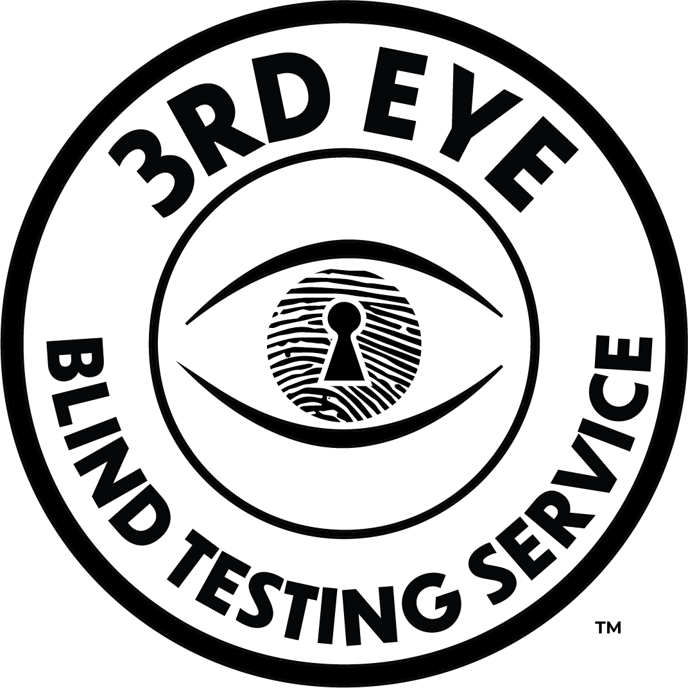

“It’s black and white; your product is either blind tested, or it’s not.” Breeder Steve
3rd Eye Blind Testing Service was conceived of to end the collusion, or the appearance of collusion, between analytical laboratories and their clients. This service rewards both the brands and the laboratories with recognition of their integrity.
Anything that gets tested should be blind tested.
3rd Eye Blind Testing Service Approved Agents handle or monitor all the correspondence between the laboratories and their clients who wish to have their testing results certified.
3rd Eye provides the clients with a list of standardized packaging materials and protocols to use for their submissions.
Certified Allocation Concealment Technicians receive and encode all samples before the laboratory technicians receive them.
Consumers who want to know that the analytical data on the packaging of the products they purchase is accurate.
Our affiliated Agents and participating 3rd Eye Blind Testing certified laboratories will be located throughout Canada and the United States to start with. We will continue to expand internationally.